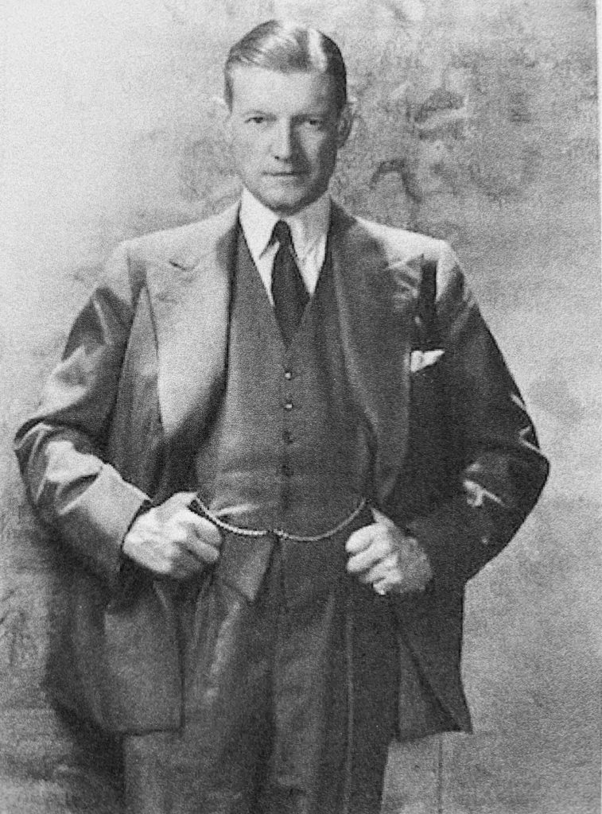
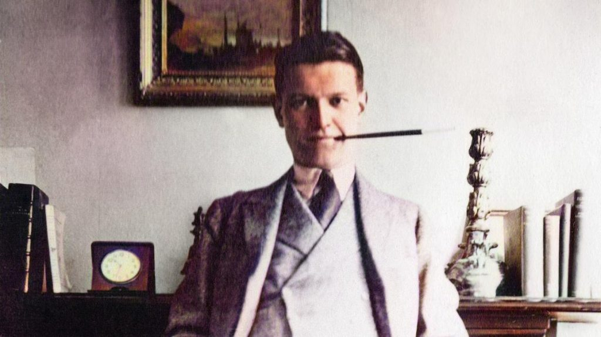
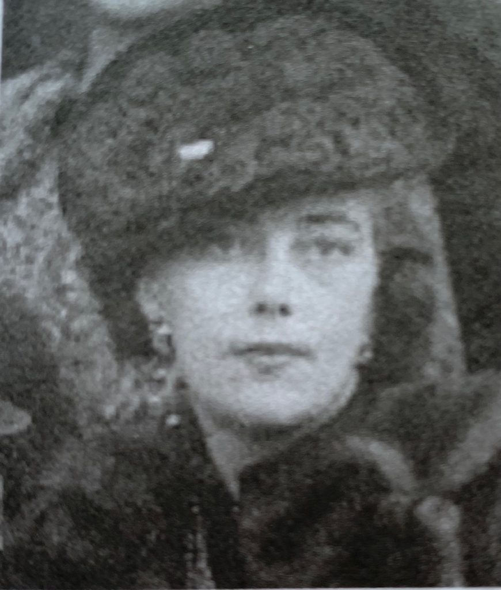
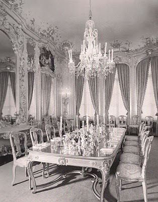
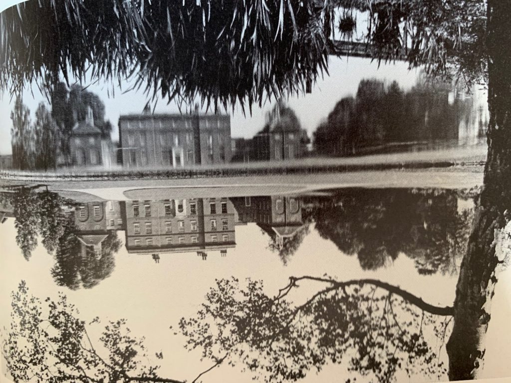
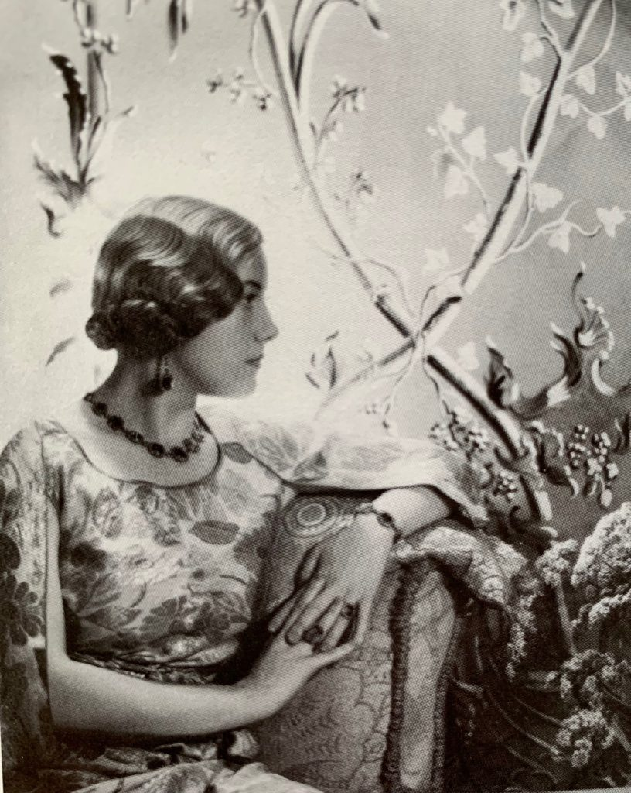

Imitation of Life
by Lucia Adams
”He saw life as a DIsraelian fairy story.” Diana Cooper

“Chips” Channon by Cecil Beaton
Sir Henry “Chips” Channon, born and raised in Chicago, became the greatest British diarist of the 20th century; called the Pepys of the interwar years he rather more resembled Wodehouse’s Galahad Threepwood or Maugham’s Elliott Templeton. Rejecting his country of origin the colossally snobbish hobnobber fashioned for himself a brand new identity among the “royalties” and aristocrats of the Old World. Social climbing was his true metier, his hunger for fame and fortune insatiable, always seeking something grander or someone grander until there was nothing left to grasp.
With a front row center seat at most of the momentous European events of his time when it was a criminal offense to be gay his life he embraced an elaborate masquerade, with noticeable and frequent breaches of discretion, for which he suffered greatly. “I am too rich and I dine with Kings…and I am bored,even sometimes lonely.” Always looking over a shoulder for the more important, preferably titled, person entering a room, he remained a minor backbencher and private secretary in the House of Commons in a career that did not remotely interest him. All the while focused on his social life he aggressively cultivated the Beaverbrooks and anyone who could “mediatize” him. A very modern man.

Wedding in Westminster 1933
Today Chips Channon would merit but a tiny footnote if not for the three million words he scribbled in fifty or more diaries from 1918-1958. Invaluable primary sources for historians, candid, keenly observant and very racy (‘what is more dull than a discreet diary? One might as well have a discreet soul’.) they read like the vas et vients of all the bold face names of his time: ’As I re-read my diary, I am frequently horrified by the scandalous tone it has’. They still shock.
The diaries originally appeared in heavily bowdlerized editions from 1967 -1998 redacted by Robert Rhodes James who rewrote many entries, completely eliminating the racy early years and publishing Parliamentary gossip about Baldwin, MacDonald, Atlee, Eden, Chamberlain and Chips’ arch enemy Churchill. Not until now, 2021, can we read, with the approval of his grandson, Chip’s true diaries published sixty years after his death when all dramatis personae are dead. Editor Simon Heffer’s first of three volumes appeared this March, a 1,000-page tome ( too heavily footnoted) spanning from 1 January 1918 to the Munich peace agreement in September 1938. (Henry “Chips” Channon: The Diaries 1918-38 Edited by Simon Heffer (Hutchinson, £35)
xxxxx

1434 Astor Street, now three condominiums
Chips (a Waspy nickname he gave himself) Channon was born at 1434 Astor Street, in Chicago, “ a cauldron of horror”, in 1897 to a wealthy merchant family —decidedly not one of the Forty Familes—that generously supported him and probably paid him to leave the country. As he wrote in his novel Paradise City, 1931, a roman a clef of his life until 1918, “There was something curious about (Danny) that made him unlike other boys.” He later wrote, “I hate and am uninterested in all the things most men like such as sports, business, statistics, debates, speeches, war, and the weather; but I am riveted by lust, furniture, glamour and society and jewels.”
His father Henry II who inherited a prosperous great lakes shipping company had a miserable marriage to Vesta Westover from Oconomowoc, member of the Alliance Francaise, WAC, Arts Club and DAR. Chips loathed her and pitied his poor “cypher” of a father recalling Hemingway who escaped America about the same time. Young pre-Chips Henry went to Francis Parker and briefly the U of C “majoring” in Alpha Delt parties, before volunteering in 1918 for the American Red Cross in Paris. With his good looks and ebullient personality he was an immediate hit, thanks to Maurice de Rothschild, with ancient aristocrats, (and he claimed to know Proust and Cocteau). Thus commenced an endless parade of Princesses, Princes, Dowager Duchesses, Grand Dukes, Tsarinas, Marquesses and Marchionesses, Queens and Kings in a lifetime of lunches, dinners, and balls given cameos in his diaries.

Yank at Oxford
In 1920 he crossed the Channel to attend, Gatsby-like, Christ Church, Oxford (he never graduated) then spent the rest of his life in the swank London of Mayfair, Belgravia and Westminster. He soon met the foreign secretary Lord Curzon the former Viceroy of India who provocatively called him “a wicked boy” and propelled him into high society; by the summer of 1923, Chips had stayed in eleven of the greatest English country houses including Castle Howard, Naworth, Hackwood, and Madresfield, and of course the Curzons’ Kedleston.
He mastered the art of appearing, perhaps un peu de trop, the ultimate gentleman in his Lesley & Roberts suits (he had 43) and Henry Poole accoutrements, clubbing up at Carlton, Bick’s, Pratt’s and seducing the right people of both sexes. It was the period of Vile Bodies and Anything Goes and up until his marriage there were countless forays into brothels, orgies à quatre, le vice anglais in churches with clergymen (none of which was published until this year!). Early in the 20s at Lady Granard’s ball, he was able to count eight people with whom he had indulged in ”the sweet delights of carnal love.”

Honor Guinness Channon
In1933 he struck gold when he married Lady Honor Guinness the tall, unglamorous Buckingham Street Girl, heiress to the stupendous brewery fortune of the second Earl of Iveagh, Rupert Guinness. When the traditional Guinness seat in Parliament became open Lord Iveagh gave it to his son- in- law, and Chips became Conservative MP for Southend-on- Sea in the House of Commons. His working class constituents horrified him almost as much as the middle classes as he scrambled ever upwards to become a peer in the House of Lords. He was appointed to the Guinness Board of Directors and received an enormous number of shares. The newlyweds were given an even more enormous sum from Iveagh to buy 5 Belgrave Square where their neighbors were the Duke of Kent (purportedly a former lover of Chips) and Princess Marina.
He designed the interior of Number 5 with the blue and silver decor of the Amalienburg in mind and he and Honor, with their little son Paul, entertained everyone who was anyone between the wars, (Noël Coward dismissed his taste as ‘very fine indeed and rather agony’. ) They also received an 18th century stately home in Essex, Kelvedon, and Chips fancied himself a country squire, Lord Westover (mother’s surname had a nice ring) of Kelvedon.

Dining room at Number 5
Though he preferred the company of his louche Cafe Society friends, Eddy Sackville-West, Emerald Cunard, Laura Corrigan from Wisconsin, Tallulah Bankhead, he quickly discovered bigger game, “I am only happy really with royalty, and real royalty at that.” Number 5 became the seductive court for Edward and Wallis and their ilk, like the Dudley Wards, in whose camp Chips remained during the Abdication Crisis. Mrs Simpson was ‘a jolly, plain, intelligent, quiet, unpretentious and unprepossessing little woman…(with) the air of a personage who walks into a room as though she almost expects to be curtsied to.”
He was sad they would never be King — and Queen. Today a history of the crisis will have to be rewritten to include such details as that from a memorandum in the diary and marked “Very Secret”: “Ernest Simpson [Wallis’s husband] never wanted a divorce, but the late King followed him about his own house, came to even his bathroom begging, imploring Ernest for his wife’s sake…”

Kelvedon
Chips shared their infatuation with Nazi Germany and praised Edward VIII for embracing his Teutonic leanings. As one of the English elite cultivated by Goebbels and Goering at the invitation of von Ribbentrop the Channons were invited to the 1936 Olympic Games in Berlin where they were feted like royalty at balls and state dinners. Göring was “a loveably disarming man” and Hitler, “One felt one was in the presence of some semi-divine creature.” Oh dear. All this alienated him from Duff Cooper who he tried to run out of the Cabinet. Diana Cooper however remained one his fastest friends throughout his life. She appears in the diaries as frequently as Emerald Cunard.
The apotheosis of the Channon’s compulsive entertaining took place on November 19, 1936, when King Edward, Wallis, the Duke and Duchess of Kent, the Prince of Monaco, assorted princesses, Emerald Cunard, Daisy Fellowes came to dinner and “Tiaras nodded, diamonds sparkled and the room swayed with jewels”.

Honor by Cecil Beaton
When George VI ascended the throne the very next month this coterie were increasingly social pariahs and Chips “fell in love with the Prime Minister” (Neville Chamberlin) and believed in appeasement. Though having been in the enemy camp he remained friendly with the King and Queen of England. In his secret diaries; however, he wrote that the new king was a “well-meaning bore, no patch at all on his brother,” who would have made a “brilliant” king. Queen Elizabeth was “lazy and charming… She will never be a great Queen for she will never be up in time.” ”She was, indolent and unambitious, …with a streak of treachery and gay malice”. He and Honor attended the Coronation in May 1937 but declined the invitation to the Windsor wedding in France the following month.
Having backed the very wrong horses his own star flickered in the demi-mondain in twilight especially after the collapse of his marriage when Honor married a Hungarian duke. In the 1950s with no more gullible royalties to cultivate and charm to death he fraternized with those creative types he once so viciously dismissed as frightfully declasse, including Waugh, “Sexy” Beaton, and many of the brightest lights of the day. Though squarely born into the same class the newly knighted Sir Henry Channon felt, “One must be so careful with these middle-class people for their standards are so different from one’s own.”

Honor and Chips at Kelvedon
On a typical day in the 1950s, he drove Gore Vidal and Tennessee Williams up to Kelvedon and made it back next day for cocktails with Mae West and Danny Kaye (he spiked drinks with Benzedrine to help things “go”). He continues to record everything he saw and heard in his diaries until he died at 61 dissipated with drink, drugs and some say drag queens though he had a happy domestic arrangement with horticulturist Peter Coates. He never did ascend to the peerage through his son Paul Channon, Baron Kelvedon, did.
XXX
Henry “Chips” Channon fooled no one worth fooling. One of his old friends, fellow MP and early guardian of his will Harold Nicolson wrote to his wife Vita Sackville-West on 22 September 1936 about a trip to Kelvedon:
“I confess that I find my host and hostess a trifle vulgar. But Kind-so kind-to impoverished royalties….But what makes Chips so exceptional is that he collects keys (snobberies) for key’s sakes. The corridors of his mind are hung with keys which open no doors of his own and no cupboards of his own, but are just other people’s keys which he has collected.”

Chips and his son Paul, portrait by Sir James Gunn
Today Chips fans find the witty, pretentious bitchiness rampant in the diaries horribly delicious —Chanel with “the soul of a concierge”; Mrs. Cavendish-Bentick who ”looks like a ferret that got loose in Cartier’s” ;the Kenneth Clarks “a touch bogus, common, a trifle Chelsea and artsy” and Churchill so “fat,brilliant,unbalanced, illogical, porcine.” Reviewing the 1967 diaries Malcolm Muggeridge wrote, “What a relief to turn to him after Sir Winston’s windy rhetoric, and all those leaden narratives by field-marshals, air-marshals and admirals!”